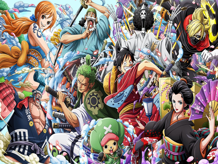

Sobre mim
-
Barista
Atuei como barista durante 6 anos, tenho bastante experiência na área, tenho 2 certificados, um pela Cereja do Café e outro pela CoffeLab, atuei em grandes cafeterias e obtive muita experiência, tanto profissional, quanto pessoal.
-

Estudos
Atualmente estou cursando Ciência da computação pela Estacio de sá, procuro novos aprendizados e conhecimentos atraves de video aulas e cursos gratuitos, efetuei alguns projetos pela Digital innovation one e também pelo YouTube
-

Quem sou eu
Sou um desenvolvedor e amante da tecnologia, tenho curso no pacote adobe pelo Senac e com um ótimo desempenho na área de TI, estudando para migrar de área e me tornar um desenvolvedor Front-End e atuar na área, procuro sempre aprender e conhecer novas áreas e linguagens, em busca de novas oportunidades e experiências.
Projetos
-

Animania
Um projeto feito pela Digital Innovation one. Tenho como hobby assistir animes e ler mangás então baseado na Netflix, recriei um site de animes e mangás com o OWLCarousel. Animania
-
Pokédex
Com ajuda de video aulas, recriei um modelo de pokedéx contendo 649 pokemons em gif, consumindo a PokemonAPI dei o primeiro passo para aprender mais sobre arquivos js. pokédex
-
Em desenvolvimento
Um novo projeto está por chegar, aguarde próximas atualizações.
© 2022 Raphael Trindade